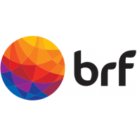

    <div class="col s12 m8 offset-m2 l6 offset-l3">
        <div class="card-panel grey lighten-5 z-depth-1">
          <div class="row valign-wrapper">
            <div class="col s2">
               <!-- notice the "circle" class -->
            </div>
            <div class="col s10">
              <span class="black-text">
                <p class="flow-text">POC of a Data Analysis solution proposed and developped by Brasil Food. for Supinfo International University</p>
                <p class="flow-text">All person and data in this application, even those based on real people, are entirely fictional.</p>
                <p class="flow-text">DataClear Inc. assumes no responsibility or liability for any errors or omissions in the content of this site. The information contained in this site is provided on an "as is" basis with no guarantees of completeness, accuracy, usefulness or timeliness. In fact, the data presented in this site are completely random and does not represent anything even remotely close to reality.</p>
              </span>
            </div>
          </div>
        </div>
      </div>
    
